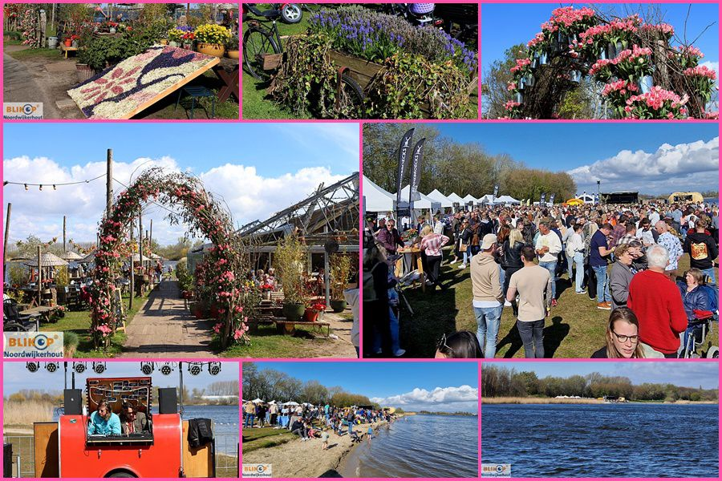

Feitjes over noordwijkerhout
- Feitje 1
telt 14.780 inwoners.
- Feitje 2
ligt achter de duinen van de Noordzeekust en midden in de Bollenstreek.
- Feitje 3
De dichtstbijzijnde stad is Leiden.
- Feitje 4
er de Tweede divisie voetbalvereniging VVSB (Voetbal Vereniging Sint Bavo), opgericht op 26 oktober 1931. Zij werden landelijk bekend door de halve finale te behalen in de KNVB beker.
- Feitje 5
Noordwijkerhout werd gesticht in de vroege middeleeuwen,
Toeristische Attractie 1
Oranjefeesten en Kermis Noordwijkerhout
Van vrijdag 1 t/m vrijdag 8 september 2023 zijn er in Noordwijkerhout weer Oranjefeesten. Tijdens de Oranjefeesten is staat er van dinsdag 5 t/m vrijdagavond 8 september een gezellige kermis op de Brink.

Toeristische Attractie 2
Heel veel bloemen, acht brouwerijen, lekkere muziek, een zonnetje en veel gezelligheid bij 'Beers & Tulips'. (foto's)
Zaterdag 15 april vond onder het genot van een lekker voorjaarszonnetje, voor de zesde keer het Beers & Tulips festival plaats op het strand voor restaurant MAMA aan het Oosterduinsemeer. Een uniek festival, georganiseerd door Como & Co, waarbij de lekkerste speciaalbieren en de trots van de Bollenstreek - heel veel vers, gekleurde bloemen - hand in hand gingen. Maar liefst acht bierbrouwerijen uit de streek tapten hun meest speciale biertjes... voor het in een gezellig aantal opgekomen publiek. De volgende brouwerijen waren er aanwezig: Pronck, Scheldebrouwerij, Het Paleisje, Baak Bier, Bierkwartier, Beste Maten, Bennebroekse Brouwerij en Gebrouwen door Vrouwen. Verschillende foodstands zorgden voor een lekkere hap en de verrassende live muziekacts van The Hoochies, Supersonic - en afgewisseld door de dj's van Radio De Koperen Hond - maakten de middag/avond compleet.
